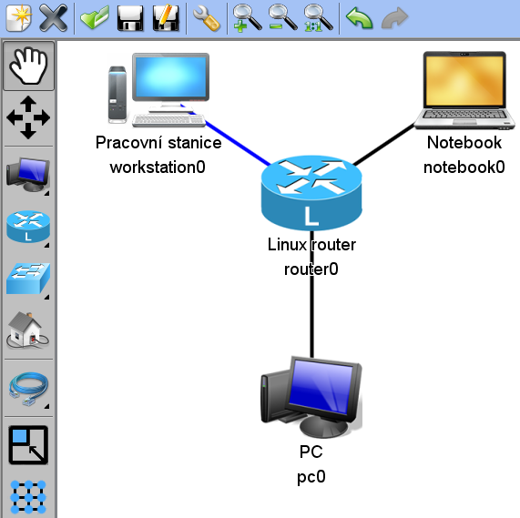
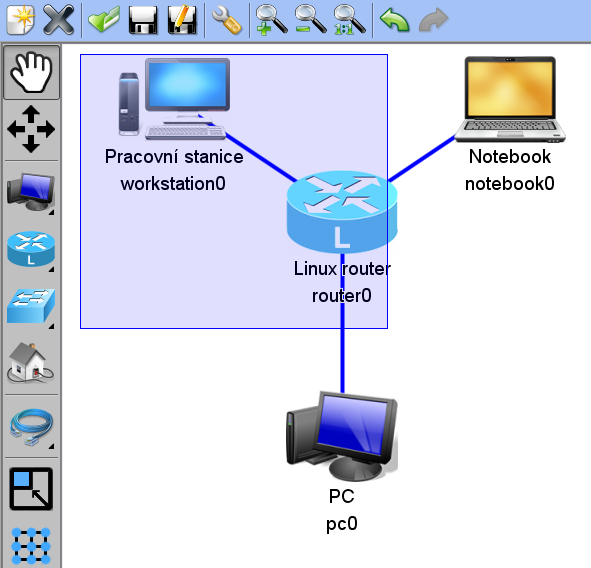
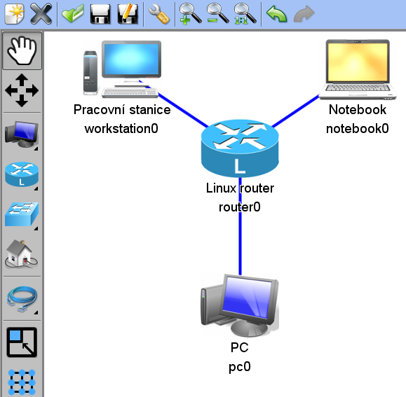
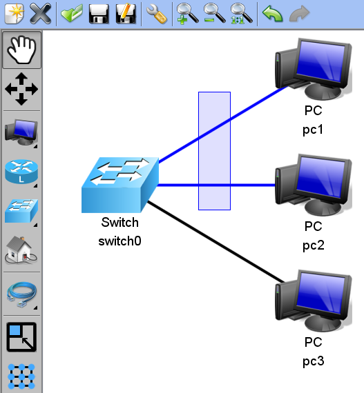
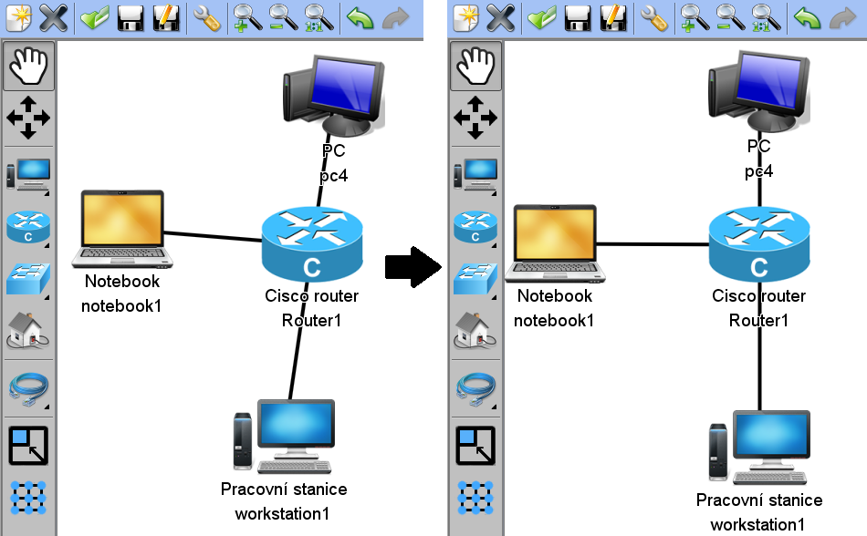
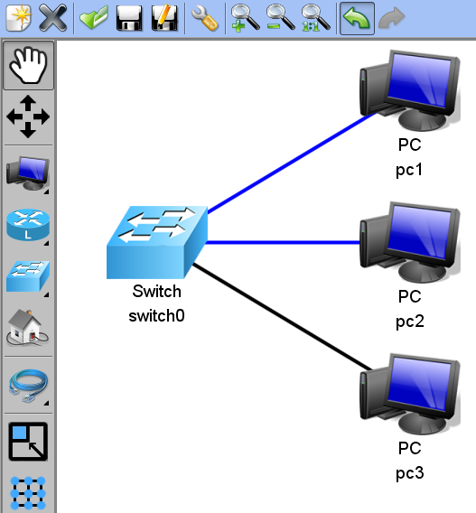

Tutorial 1: Network manipulation
- Welcome screen
- New project creation
- Placing components into board
- Connecting components with cables
- Network manipulation
- Setting network components properties
- Details settings
- Saving the project
Network manipulation
Choose Hand tool in tool menu for network manipulation.
Component marking
There are more ways of marking components as described below. Cables that belog to the marked components are marked automatically.
With mouse click
One component can be marked by left mouse button.
Dragging the mouse
More components can be marked by dragging the marking box over them.
Ctrl + left mouse button
When holding the CTRL button you can add or remove components by a simple click. Next image describes marking components using this way. Only the middle Router is not marked.
Cables marking
It is allso possible to mark only the cables. This can be achieved by dragging the marking box or holding the CTRL key and clicking on the cable.
Change of the component position
Marked components can be moved using drag&drop function.
Align to grid
The whole network (or only the marked components) can be aligned to grid. You can see the result on the following picture.
Marking all components
You can allso mark all componnets by selecting Select all. This option can be accessed by clicking the right mouse button on the draw panel:

Undo/Redo
All operations which manipulate the network (adding components, removing components, change of postition, align to grid...) can be reverted using the Undo function.
Next part of this tutorial is: Details settings.